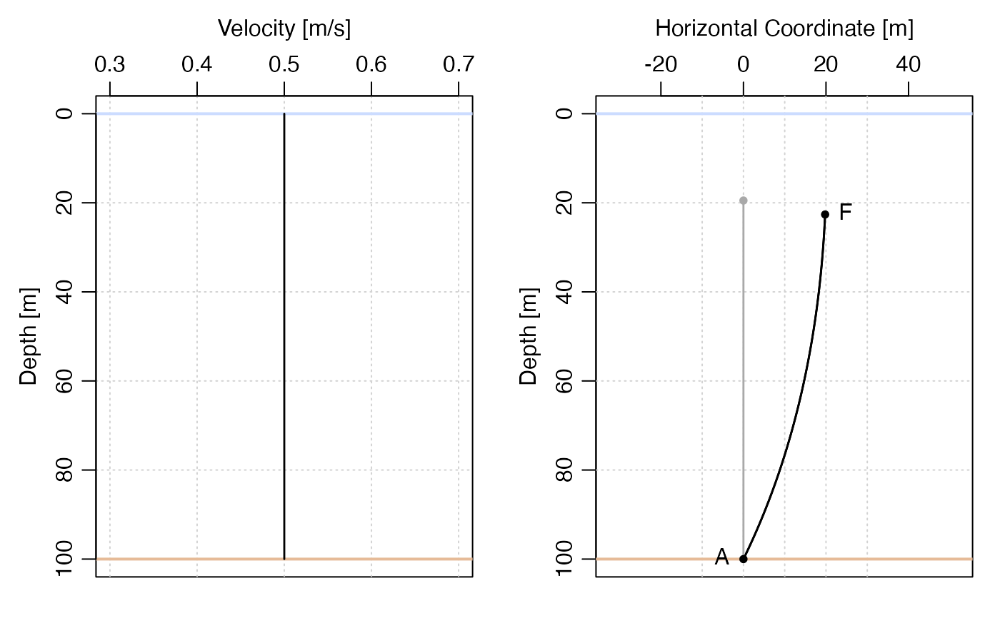
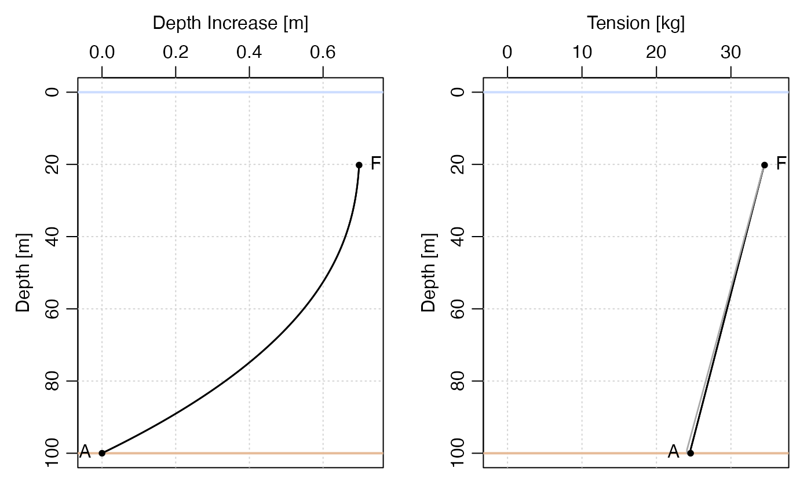

The current may be a depth-independent or depth-dependent,
as specified by the u argument. The returned result has
an attribute named u that holds the value of that
argument, and this is how a later call to plot.mooring()
is able to display a velocity profile; see
“Examples” 2 and 3.
knockdown(m, u = 1, debug = 0L)
Arguments
| m | an object of the |
|---|---|
| u | either a non-negative number indicating depth-independent velocity, or a function that returns that velocity as a function of depth (m) below the ocean surface. |
| debug | an integer value (or a numeric that can be converted to an integer) that controls debugging. If this is positive, then some debugging information may be printed by the function. |
Value
a new mooring object representing the deformed mooring, with
x and z values updated (and original values saved as x0 and z0).
Author
Dan Kelley
Examples
# Illustrate importance of drag on the wire. library(mooring) m <- mooring(anchor(depth=100), wire(length=80), float("HMB 20")) md <- discretise(m) # Example 1: no current plot(md)# Example 2: uniform 0.5 m/s (approx. 1 knot) current par(mfrow=c(1, 2)) k1 <- knockdown(md, u=0.5) plot(k1, which="velocity") plot(k1)# Example 3: 0.5 m/s current at surface, decaying exponentially below k2 <- knockdown(md, u=function(depth) 0.5*exp(-depth/100)) par(mfrow=c(1, 2)) plot(k2, which="velocity") plot(k2)# Example 4: as Example 3, but show knockdown k2 <- knockdown(md, u=function(depth) 0.5*exp(-depth/100)) par(mfrow=c(1, 2)) plot(k2, which="knockdown") plot(k2)